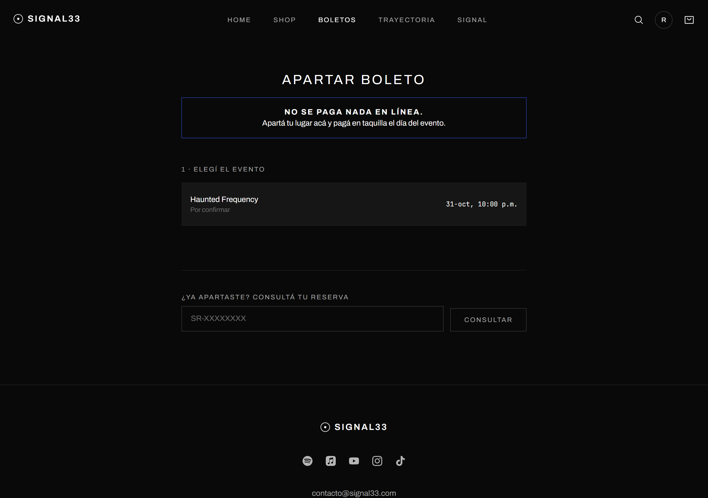
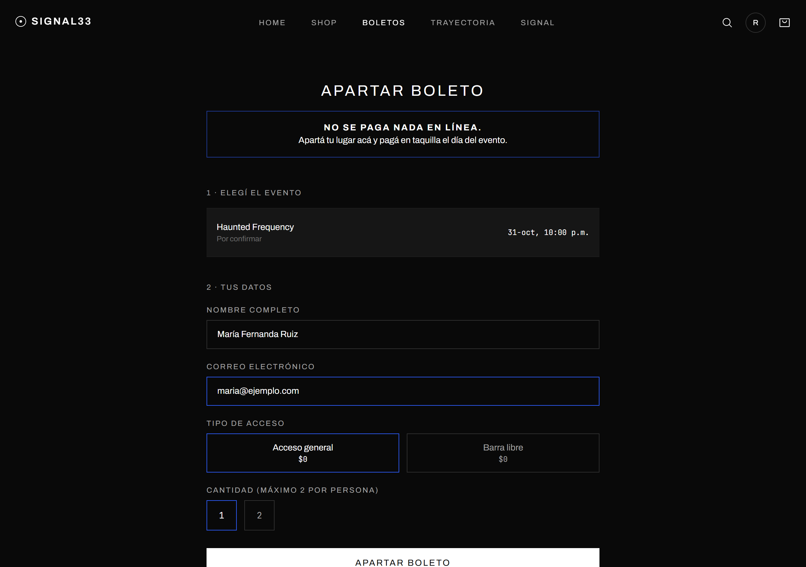
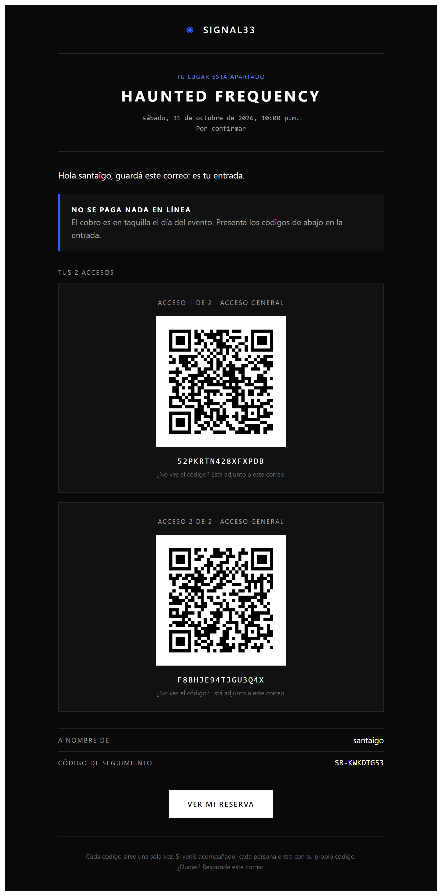
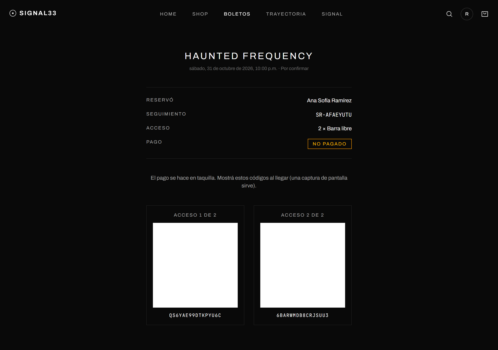
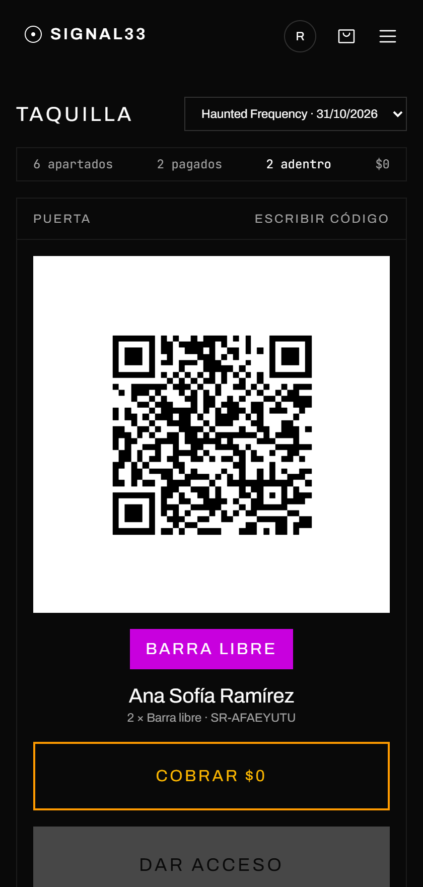
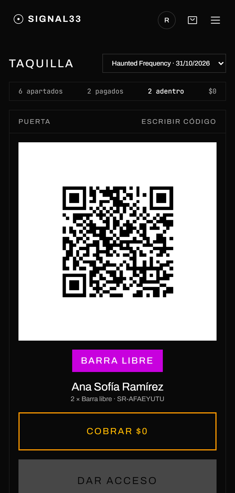
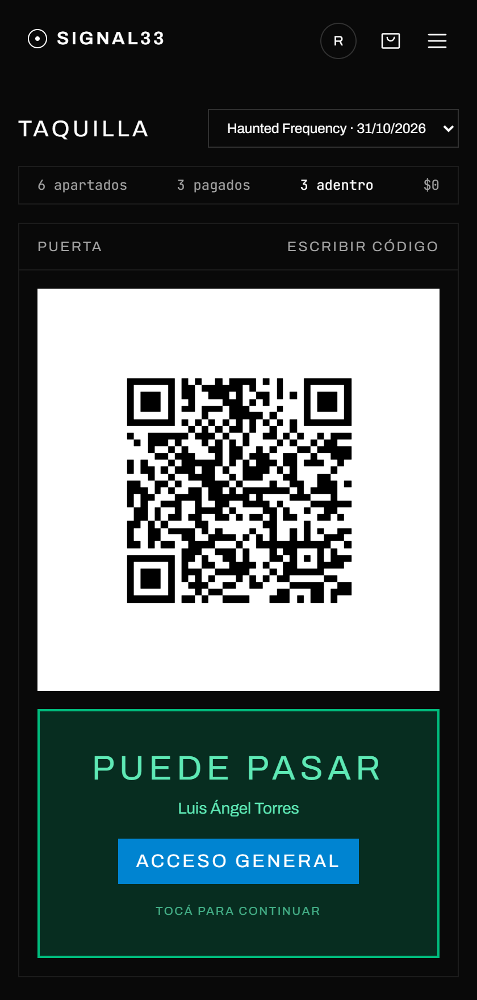
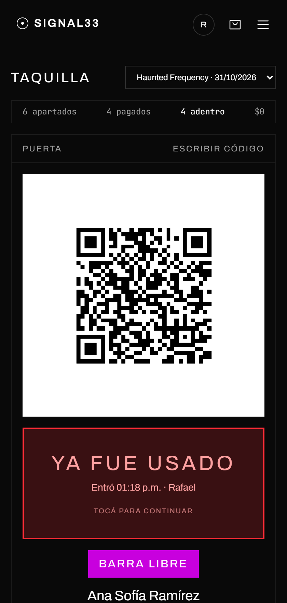
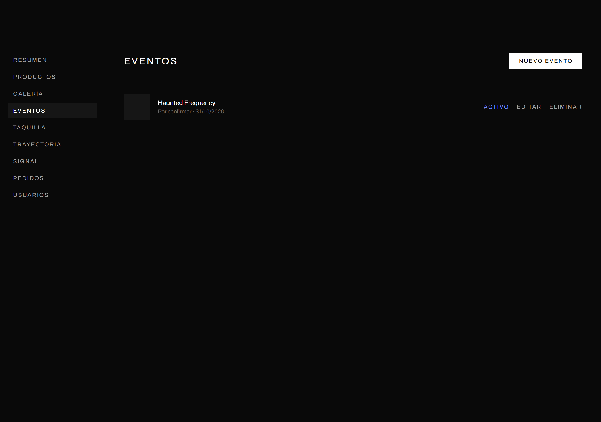
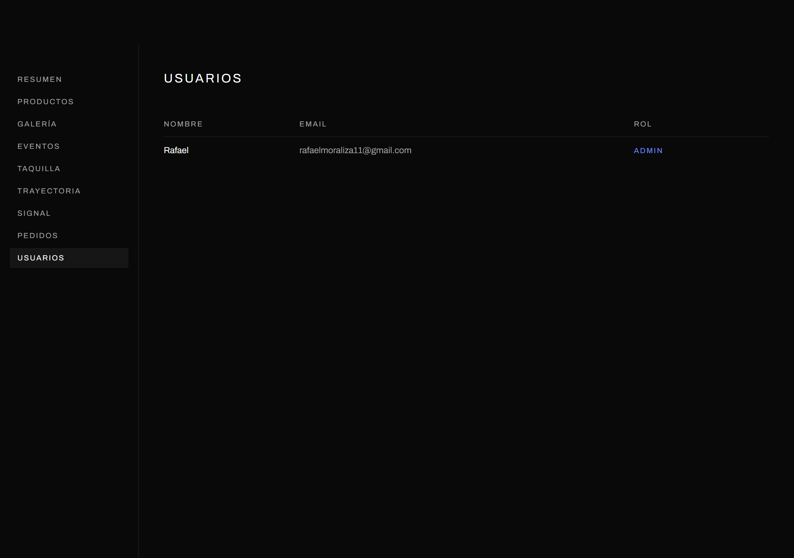

Cómo el público aparta su boleto, cómo se cobra y se valida en la puerta, y qué hay que hacer para subirlo a un servidor.
La gente aparta su lugar en el sitio sin pagar nada en línea, recibe por correo un QR por cada acceso, y en la puerta se le cobra y se le escanea. Cada QR sirve una sola vez.
SR-XXXXXXXX) con el que puede ver su reserva en el sitio cuando quiera.




Esta es la parte que el personal de la puerta tiene que conocer. Se entra desde el círculo con la inicial, arriba a la derecha, opción Taquilla. Está pensada para usarse desde el celular, con una mano y sin mirar mucho.
La cámara queda encendida todo el tiempo. No hay que tocar "escanear" con cada persona: se apunta al código, aparece la ficha, se cobra si hace falta, se toca Dar acceso, y la pantalla vuelve sola a la cámara para el siguiente de la fila.




| Lo que ves | Qué pasó | Qué hacés |
|---|---|---|
| Falta cobrar (amarillo) | Apartó pero no ha pagado | Cobrás el monto que dice el botón, lo tocás, y luego "Dar acceso" |
| Puede pasar (verde) | Entró correctamente | Pulsera según el color. Vuelve sola a la cámara |
| Ya fue usado (rojo) | Ese código ya entró antes | No pasa. La pantalla dice la hora y quién lo validó |
| Otro evento (rojo) | Boleto de otra fecha | No pasa |
| Código inválido (rojo) | El código no existe o se canceló | Buscarlo por nombre en "Buscar una reserva" |
| Situación | Solución |
|---|---|
| Perdió el correo o se quedó sin batería | Abrir "Buscar una reserva", buscarlo por nombre o correo, pedir identificación y validar desde su ficha |
| Dice que nunca le llegó el correo | En su ficha se ve el estado del correo. Botón "Reenviar correo", o dictarle su código de seguimiento |
| Llegan dos con una sola reserva | El pago cubre los dos accesos, pero cada QR se escanea por separado |
| Se marcó pagado por error | Abrir la ficha en "Buscar una reserva" y usar "Corregir: marcar NO pagado". Queda en el historial |
| Discute que ya pagó | Abrir su ficha y mirar el Historial: dice quién cobró y a qué hora |
| Se cae el internet | Usar la lista impresa y marcar a mano. Después se captura en el sistema |


| Rol | Qué puede hacer |
|---|---|
| Usuario | Comprar en la tienda. Nada de administración |
| Taquilla | Cobrar, validar accesos y reenviar correos. No puede cancelar reservas, ni tocar productos, usuarios ni precios |
| Admin | Todo, incluido cancelar reservas, descargar la lista y cambiar roles |
Para dar de alta a alguien de la puerta: que se registre en el sitio como cualquier usuario, y luego en Usuarios se le cambia el rol a Taquilla. Tiene que cerrar sesión y volver a entrar para que le aparezca.
Esta sección es para quien haga el despliegue.
Los navegadores sólo dan acceso a la cámara en sitios con HTTPS. Sin certificado, el escáner de taquilla no abre la cámara. La configuración incluida (Caddy) lo saca solo.
git clone https://github.com/RafaH2K/signal33.git
cd signal33
cp .env.example .env
nano .env # ver la tabla de abajo
cd frontend && npm install && npm run build && cd ..
docker compose up -d --build
curl https://tu-dominio.com/api/health # debe responder {"success":true,...}
Las migraciones de la base de datos se aplican solas al levantar.
.env| Variable | Valor |
|---|---|
APP_URL | https://tu-dominio.com — de aquí salen los enlaces de los QR |
FRONTEND_URL | https://tu-dominio.com |
SITE_DOMAIN | tu-dominio.com — lo usa Caddy para el certificado |
CORS_ALLOWED_ORIGINS | https://tu-dominio.com |
DATABASE_PASSWORD | Una contraseña larga y nueva |
JWT_ACCESS_SECRETJWT_REFRESH_SECRET | Generar cada uno con openssl rand -hex 48 |
RESEND_API_KEY | La clave de la cuenta de Resend |
RESEND_FROM_EMAIL | SIGNAL33 <signal@findyourfrequency.com> |
EMAIL_QUEUE_CONCURRENCY | 2 con plan gratuito; más alto con plan de pago |
Para enviar desde signal@findyourfrequency.com: en Resend, Domains → Add
Domain, y copiar los registros DNS que da (SPF, DKIM y DMARC) al panel donde se compró
el dominio. Hasta que diga Verified, sólo se puede enviar al correo del titular de
la cuenta.
El plan gratuito manda unos 100 correos al día. Para miles de asistentes hace falta plan de pago, o los correos se van acumulando en la cola.
Sin esto, una falla del servidor se lleva todas las reservas. Programar en cron:
0 * * * * cd /ruta/signal33 && ./scripts/backup-db.sh >> backups/backup.log 2>&1
Restaurar: gunzip -c backups/signal33-XXXX.sql.gz | docker compose exec -T db psql -U postgres -d signal33
git pull cd frontend && npm run build && cd .. docker compose up -d --build
Problemas reales, con su causa y su arreglo.
| Síntoma | Causa | Arreglo |
|---|---|---|
| El escáner no abre la cámara | El sitio no está en HTTPS, o el navegador no tiene permiso de cámara | Comprobar el certificado. En el candado del navegador, dar permiso de cámara al sitio |
Los QR llevan a localhost |
APP_URL o FRONTEND_URL quedaron con el valor de desarrollo |
Corregir el .env, relevantar y reenviar los correos afectados |
| No sale el certificado | El dominio no apunta al servidor todavía, o los puertos 80/443 están cerrados | Comprobar el registro A y el firewall. Caddy reintenta solo |
| El sitio carga pero todo da error | CORS_ALLOWED_ORIGINS no incluye el dominio real |
Agregarlo tal cual, con https:// y sin barra final |
| La API no levanta | Falta una variable obligatoria en .env |
docker compose logs api dice cuál falta por su nombre |
| Error de conexión a la base | DATABASE_HOST con otro valor |
Dentro de compose tiene que ser db, no localhost |
| No llegan los correos | Dominio sin verificar, o se acabó el límite diario | Verificar el dominio; revisar el panel de Resend. La cola reintenta sola |
| Los correos caen en spam | Falta SPF/DKIM/DMARC | Verificar el dominio en Resend y esperar a que propague el DNS |
| Se despliega un cambio y el personal sigue viendo la versión vieja | El navegador guardó en caché la versión anterior | Que cierren la pestaña y vuelvan a abrir, o usen una ventana privada. Pasó en las pruebas y cuesta detectarlo |
| Síntoma | Causa | Arreglo |
|---|---|---|
| "Demasiadas reservas desde esta conexión" | Límite de 60 por hora por conexión. Varias personas comparten salida a internet | Subir el límite en src/middlewares/rateLimit.js y volver a desplegar |
| Se agotó y todavía hay lugar | El cupo del evento está mal configurado | Eventos → Editar → cupo. Vacío = sin límite |
| Los correos tardan | La cola envía al ritmo que permite el plan de Resend | Subir EMAIL_QUEUE_CONCURRENCY tras pasar a plan de pago |
| Síntoma | Causa | Arreglo |
|---|---|---|
| La cámara no lee un QR | Brillo bajo, pantalla rayada o mica | Pedir que suban el brillo; si no, botón "Escribir código" y teclear los 16 caracteres |
| No se oyen los sonidos | Los celulares no dejan sonar una página hasta que el usuario la toca | Tocar la pantalla una vez al abrir la taquilla |
| Se abre la cámara pero no lee nada | Versión vieja en caché, o permiso de cámara denegado | Cerrar y reabrir la pestaña. Revisar el permiso de cámara del sitio |
| Se cae el internet del lugar | La red del venue se satura cuando se llena | La lista impresa. Marcar a mano y capturar después |
| "Demasiadas operaciones seguidas" | Límite de 240 por minuto por persona de taquilla | Esperar unos segundos. Si pasa seguido, abrir otra taquilla con otra cuenta |
| Alguien aparece como que ya entró y jura que no | Alguien más usó su QR, o se escaneó dos veces | El Historial de su ficha dice hora y quién validó. Decide el coordinador |
| Se fue la luz / se apagó el celular | — | Otro celular con la misma cuenta ve lo mismo al instante. Nada se pierde |
| Probado | Cómo |
|---|---|
| Apartar, límite de 2 por persona, cupo, cobro y validación | 46 pruebas automáticas, incluidos envíos simultáneos |
| Que un QR no se pueda reusar | Prueba automática con dos lectores escaneando a la vez |
| Generar y volver a leer los QR | Prueba automática con 21 códigos distintos |
| Escanear con cámara real | iPhone contra la pantalla de una laptop, en la red local |
| Carga de 10 000 reservas | Script de prueba, sin errores, en una laptop |
En las capturas los montos aparecen en $0 porque el evento todavía no tiene precios cargados. Hay que ponerlos en Eventos → Editar antes de abrir la venta, o en la puerta el botón dirá "Cobrar $0".
Usuario: rafaelmoraliza11@gmail.com
Contraseña: se entrega aparte, no se comparte en este documento
Al subirlo al servidor, la base arranca vacía: no hay usuarios. El primero se crea registrándose en el sitio como cualquier persona, y luego se le da el rol de admin directamente en la base de datos:
docker compose exec db psql -U postgres -d signal33 \ -c "UPDATE users SET role='ADMIN' WHERE email='tu-correo@ejemplo.com';"
De ahí en adelante, el resto de los roles se cambian desde Admin → Usuarios.
.env tiene todas las claves y no se sube a GitHub. No pasarlo por chat.